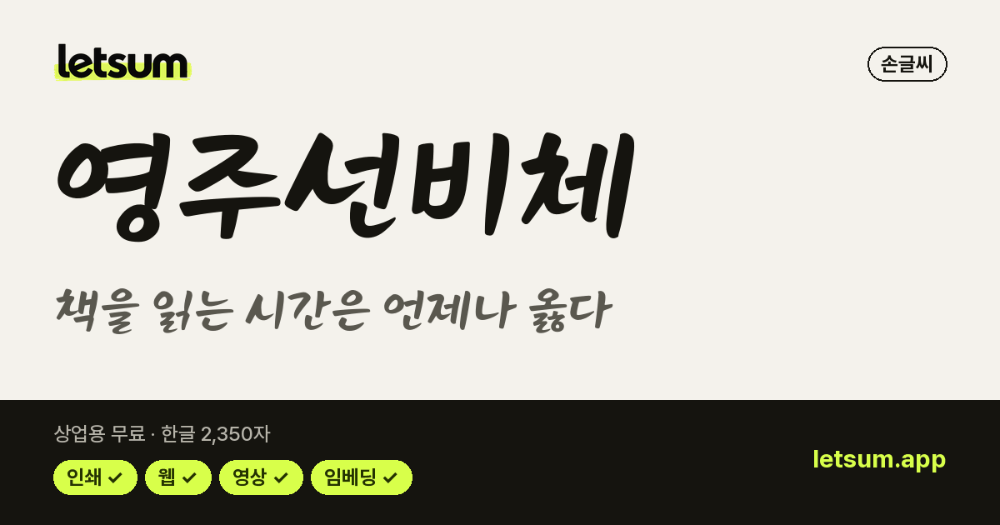
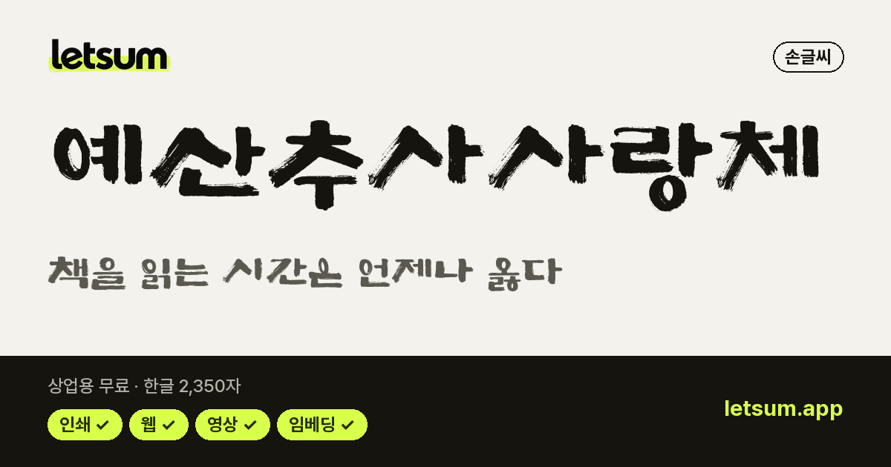
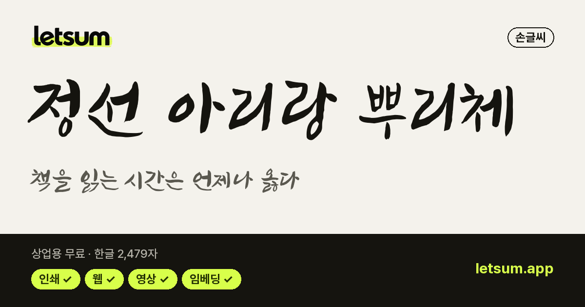
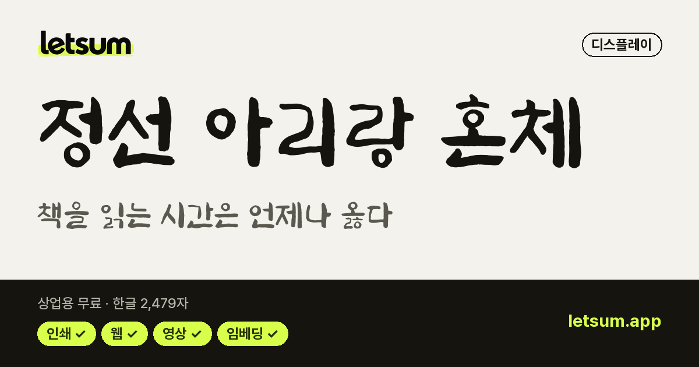
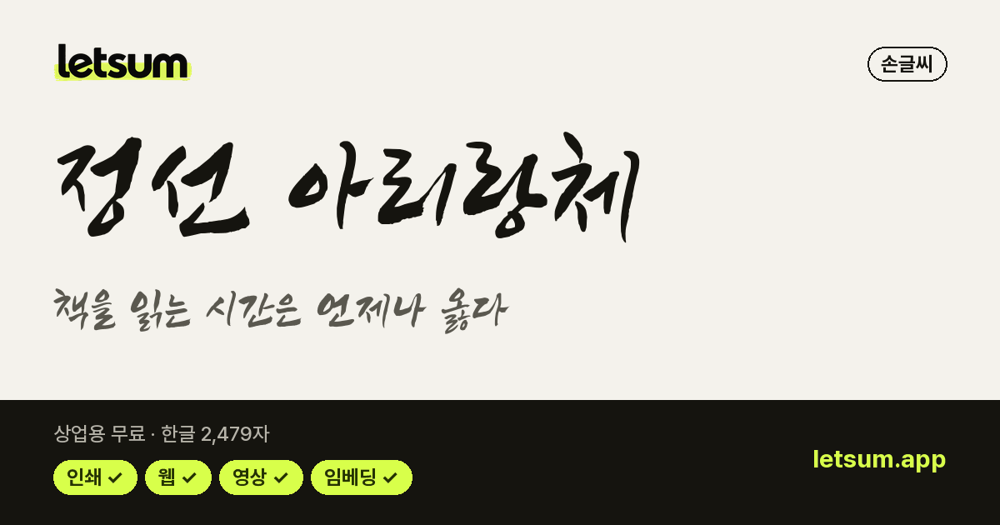

전통 서예·궁서 무료 폰트 11종
메인 화면에서 이 목록 보기 →내 문장으로 미리보기·비교·필터를 함께 쓸 수 있습니다
한자 지원은 확인한 폰트 파일의 실제 한자 50자 이상 기준입니다. 지원 제한은 미수록 또는 50자 미만이며, 지원 표시도 모든 한자를 보장하지 않습니다. 사용할 문장을 미리보기로 확인하세요.
캘리그라피·붓글씨 모음 중 전통 서예·궁서 분위기로 고른 목록입니다. 한자 지원은 확인한 폰트 파일의 실제 한자 50자 이상 기준입니다. 지원 제한은 미수록 또는 50자 미만이며, 지원 표시도 모든 한자를 보장하지 않습니다. 사용할 문장을 미리보기로 확인하세요.
라이선스 원문 대조 · 다운로드는 원 배포처로 연결 · 목록 갱신 2026-11-02 · 견본 이미지를 누르면 상세 정보와 내 문장 미리보기로 갑니다.

영주선비체손글씨 · 굵기 1종 · 한글 2,350자한자 지원 제한 · 전통 서예·궁서공공누리 1유형 · 인쇄·웹·영상·BI/CI 가능 조선궁서체손글씨 · 굵기 1종 · 한글 2,932자한자 지원 · 전통 서예·궁서조선일보 무료 이용 · 인쇄·웹·영상·BI/CI 가능
조선궁서체손글씨 · 굵기 1종 · 한글 2,932자한자 지원 · 전통 서예·궁서조선일보 무료 이용 · 인쇄·웹·영상·BI/CI 가능 아산 이순신체손글씨 · 굵기 2종 · 한글 11,172자한자 지원 제한 · 전통 서예·궁서공공누리 1유형 · 인쇄·웹·영상·BI/CI 가능
아산 이순신체손글씨 · 굵기 2종 · 한글 11,172자한자 지원 제한 · 전통 서예·궁서공공누리 1유형 · 인쇄·웹·영상·BI/CI 가능 영양군 음식디미방체손글씨 · 굵기 1종 · 한글 11,172자한자 지원 제한 · 전통 서예·궁서공공누리 1유형 · 인쇄·웹·영상·BI/CI 가능
영양군 음식디미방체손글씨 · 굵기 1종 · 한글 11,172자한자 지원 제한 · 전통 서예·궁서공공누리 1유형 · 인쇄·웹·영상·BI/CI 가능
예산추사사랑체손글씨 · 굵기 2종 · 한글 2,350자한자 지원 제한 · 전통 서예·궁서공공누리 1유형 · 인쇄·웹·영상·BI/CI 가능 전주완판본체 각명조 · 굵기 3종 · 한글 11,172자한자 지원 제한 · 전통 서예·궁서공공누리 1유형 · 인쇄·웹·영상·BI/CI 가능
전주완판본체 각명조 · 굵기 3종 · 한글 11,172자한자 지원 제한 · 전통 서예·궁서공공누리 1유형 · 인쇄·웹·영상·BI/CI 가능 전주완판본체 순명조 · 굵기 3종 · 한글 11,172자한자 지원 제한 · 전통 서예·궁서공공누리 1유형 · 인쇄·웹·영상·BI/CI 가능
전주완판본체 순명조 · 굵기 3종 · 한글 11,172자한자 지원 제한 · 전통 서예·궁서공공누리 1유형 · 인쇄·웹·영상·BI/CI 가능
정선 아리랑 뿌리체손글씨 · 굵기 1종 · 한글 2,479자한자 지원 제한 · 전통 서예·궁서공공누리 1유형 · 인쇄·웹·영상·BI/CI 가능
정선 아리랑 혼체손글씨 · 굵기 1종 · 한글 2,479자한자 지원 제한 · 전통 서예·궁서공공누리 1유형 · 인쇄·웹·영상·BI/CI 가능
정선 아리랑체손글씨 · 굵기 1종 · 한글 2,479자한자 지원 제한 · 전통 서예·궁서공공누리 1유형 · 인쇄·웹·영상·BI/CI 가능 제주한라산체손글씨 · 굵기 1종 · 한글 11,172자한자 지원 제한 · 전통 서예·궁서공공누리 1유형 · 인쇄·웹·영상·BI/CI 가능
제주한라산체손글씨 · 굵기 1종 · 한글 11,172자한자 지원 제한 · 전통 서예·궁서공공누리 1유형 · 인쇄·웹·영상·BI/CI 가능자주 묻는 질문
한자를 쓰면 일부 글자만 다른 폰트로 보이는 이유는?
쓰고 있는 폰트에 그 한자가 없어서 컴퓨터가 다른 폰트로 대신 그리기 때문입니다. 한자 지원 폰트를 쓰면 한글과 한자가 같은 디자인으로 보입니다. LETSUM의 한자 지원 여부는 폰트 파일에 실제로 그려진 글자를 세어 판단합니다.
'무료 폰트'면 상업적으로 써도 되나요?
아닙니다. 개인 용도만 무료인 폰트도 많고, 상업용 무료라도 로고(BI/CI)·영상·웹폰트 임베딩·포장지 사용은 따로 막아 둔 경우가 있습니다. LETSUM은 폰트마다 라이선스 원문을 대조해 항목별 사용 범위를 표로 보여 줍니다.
무료 폰트를 다운로드한 뒤 어떻게 적용하나요?
받은 압축(zip) 파일을 풀고, 폰트 파일(.ttf·.otf)을 윈도우는 오른쪽 클릭 → '모든 사용자용으로 설치', 맥은 더블클릭 → '서체 설치'로 설치합니다. 쓰던 프로그램(파워포인트·포토샵 등)을 껐다 켜면 글꼴 목록에 나타납니다.
다른 무료 폰트 목록
상업용 무료 한글 폰트 568무료 고딕 폰트 151무료 명조(바탕) 폰트 42무료 손글씨 폰트 235귀여운 폰트 83예쁜 감성 폰트 217제목용 폰트 140레트로·픽셀 폰트 26캘리그라피·붓글씨 폰트 45감성 캘리그라피 25강한 붓글씨·제목용 9유튜브 썸네일 폰트 173PPT 폰트 70로고 폰트 509무료 한글 웹폰트 51511,172자 지원 폰트 327한자 지원 폰트 41옛한글 지원 폰트 4OFL 한글 폰트 342공공누리 무료 폰트 123코딩 폰트 14무료 영문 폰트 764딩벳·아이콘 폰트 48산세리프 영문 폰트 304세리프 영문 폰트 157영문 필기체·손글씨 폰트 101영문 제목·로고 폰트 172영문 코딩 폰트 30가변 영문 폰트 234다국어 지원 영문 폰트 364무료 아이콘 폰트 29바코드 폰트 7이모지·기호 폰트 5시안·데이터 표현 폰트 7
※ 사용 범위는 참고용이며, 정확한 범위는 이용 전 저작권자의 원문 라이선스로 확인하세요. 모든 폰트의 저작권은 각 저작권자에게 있습니다.